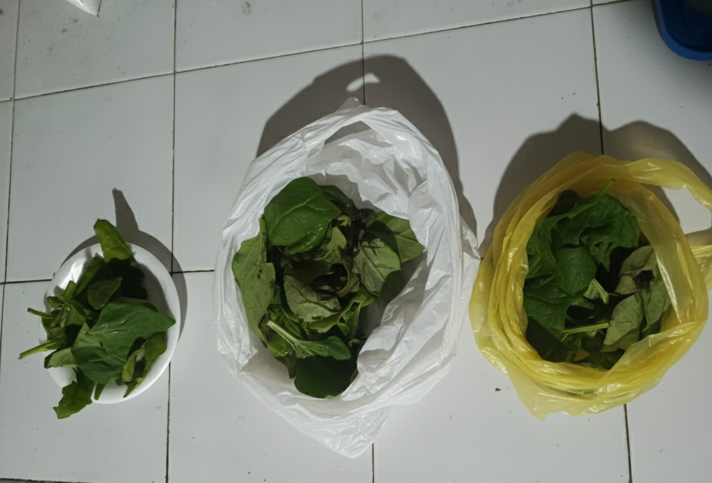

Grupo A: Control a Temperatura Ambiente

- Día 1
-
- Textura: Las hojas empezaron a perder un poco de firmeza; ya no se sentían tan crujientes. Se notaba un ligero marchitamiento.
- Color: El verde seguía vibrante, casi sin cambios.
- Olor: Mantenía un olor fresco, característico de la espinaca.
- Día 2
-
- Textura: La pérdida de turgencia era muy evidente. Las hojas estaban suaves y caídas.
- Color: Comencé a ver un leve amarillamiento en los bordes de algunas hojas.
- Olor: El olor fresco desapareció, dando paso a un olor ligeramente agrio y húmedo.
- Día 3
-
- Textura: Las hojas se volvieron blandas y viscosas al tacto, completamente marchitas.
- Color: El amarillamiento se extendió y aparecieron algunas manchas oscuras, signo de pudrición.
- Olor: El olor ya era claramente desagradable y a descomposición.